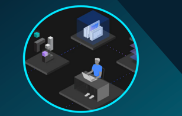

Business Partner AI-infused Java and DevOps TechJam, an IBM TechXchange Workshop
Home
Agenda
Hands-on Labs
Business Partner AI-infused Java and DevOps TechJam, an IBM TechXchange Workshop
Docs
»
Appmod containers labs env assignments
Liberty in Containers lab environment assignments
